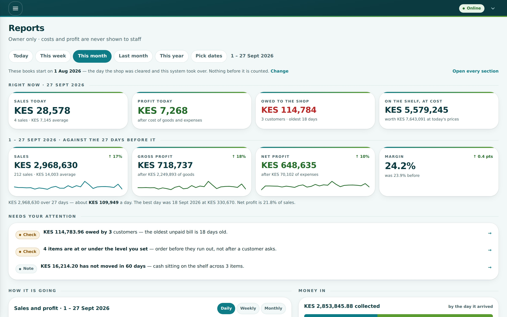
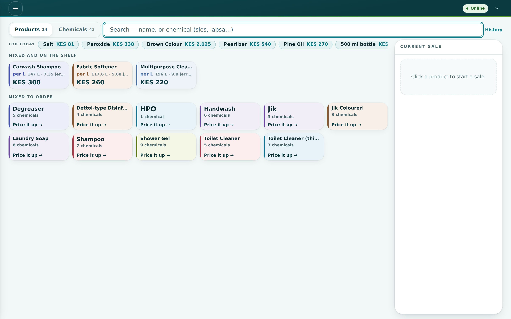
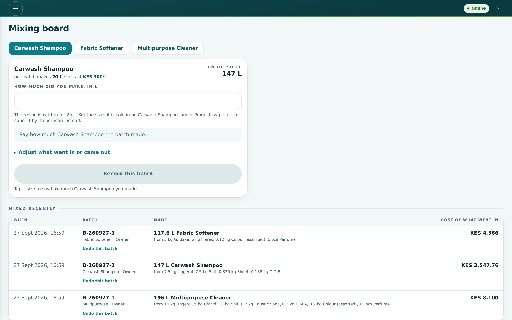
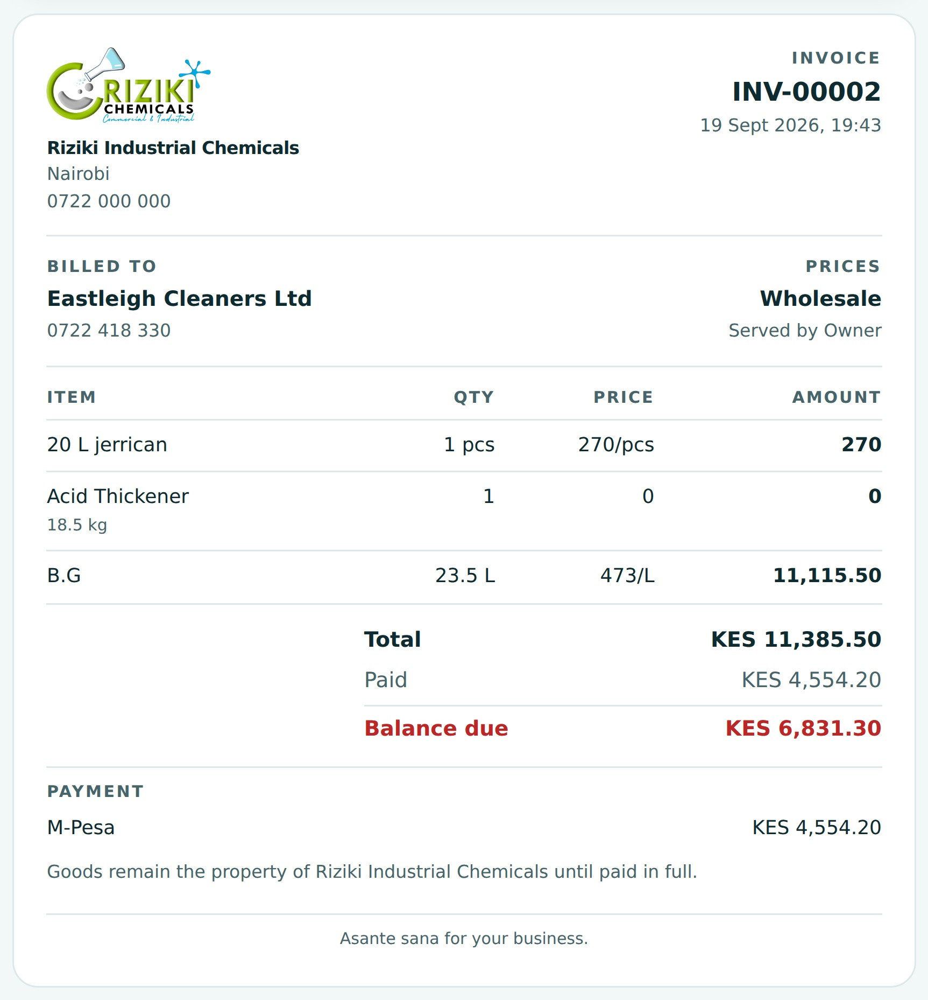
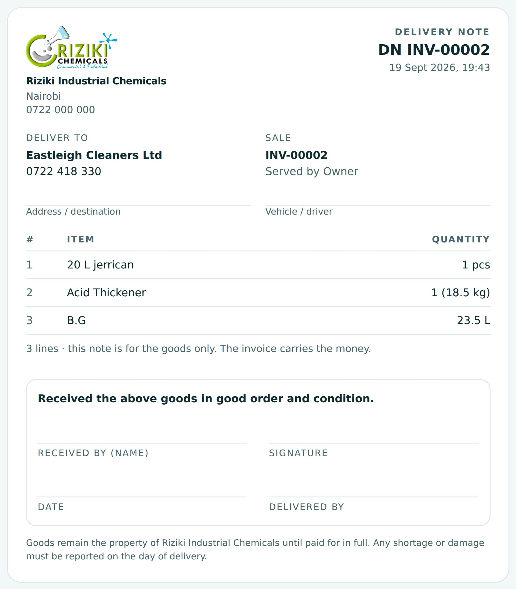

A counter, stock, mixing, credit and profit system for a chemicals shop — one database, one server, no monthly seat fees.





One Next.js application and one SQLite database on a small Linux server, behind HTTPS. No cloud account to lose, no per-user licence, no data leaving the country. The whole shop fits in a file small enough to e-mail, and a backup of it goes off the server every night.
Every figure in the reports is recomputed from the raw tables in the test suite — sales, cost, expenses, the chart bars, cash against M-Pesa — and checked to the cent before a release goes near the counter.